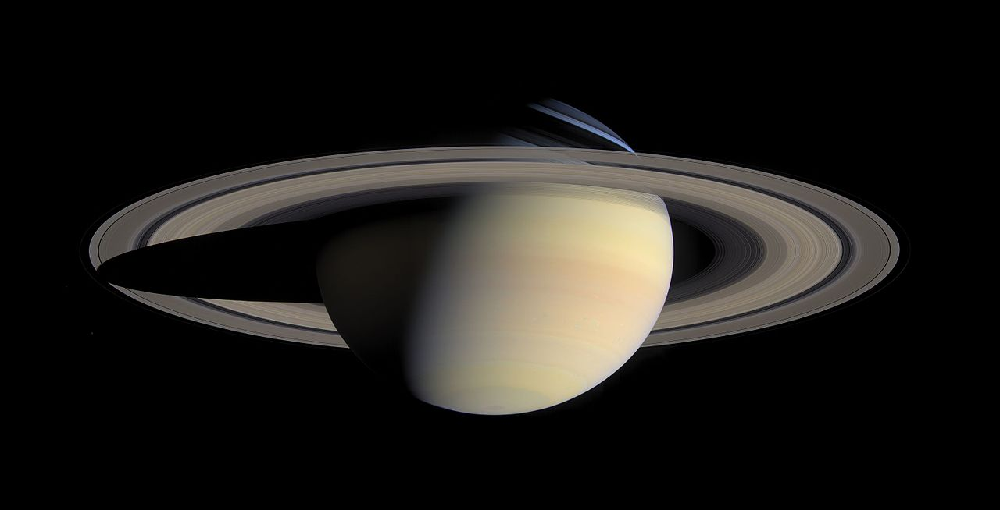

Interstellar travel fuel cocktail

Description
Thousands of pilots enjoy everyday this revitalizing cocktail after a long journey traveling under 0g conditions
through the solar system.
With Odin Recipes, you'll learn today how the most famous cocktail in 3 LY away from The Sun is prepared and served.
Ingredients
Ingredients for 6437 portions.
- 1 Magnetic container
- 3 Mol Lunar Dust
- 1 Mol Metalic Hydrogen
- 30 ml Vodka
- 200 ml Watermelon juice
- 11g Carbon Dioxide
- 2g Hydroponic Lemon
Steps
- mix Lunar Dust,Metalic Hydrogen and Vodka in a fine grain mixer.
- Compress the mix to form a cube and put it the bottom of the Magnetic container.
- Solidify the Carbon Dioxide and submerge it the Magnetic container
- Quickly add the Watermelon juice and close the Magnetic container and let it
rest for 1 minute.
- Shot the magnetic container with a short burst (1 ms) of Beta radiation from an automatic particle collider.
- Now open the Magnetic container and add the Hydroponic lemon.
- You can drink it from the magnetic container or serve it in an Iridium goblet.
Back to mainsite